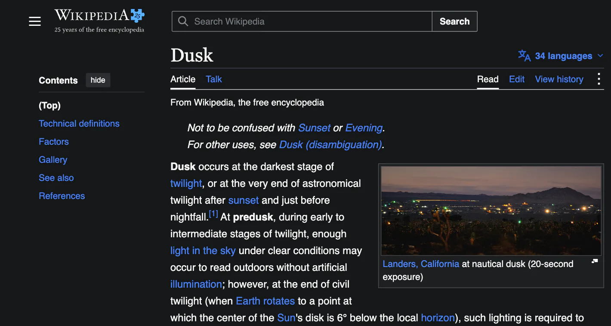
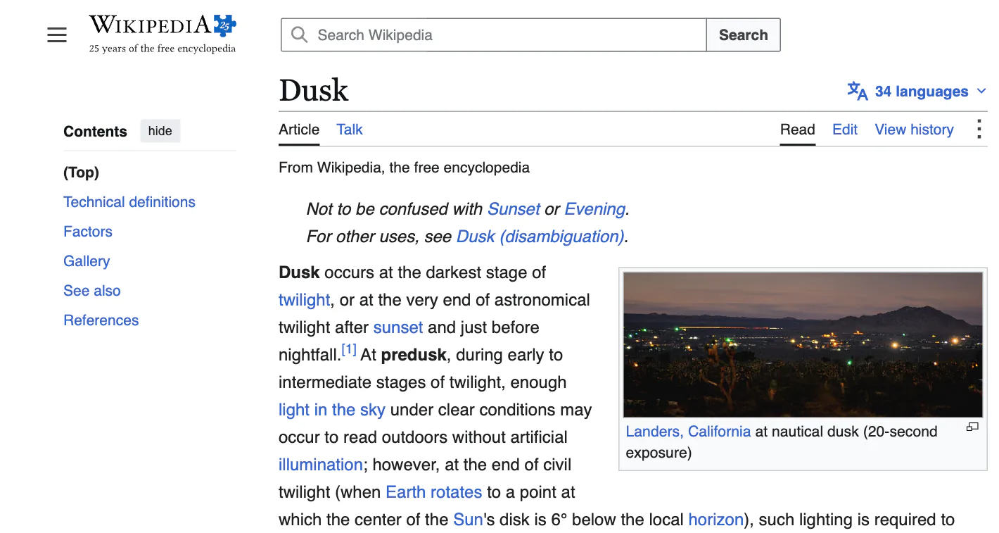

Dark browser.
Bright page?
Dusk for Chrome darkens supported websites that stay light, with a choice for each site.
Add to ChromeFree for desktop Chrome. Version 0.3.1. No Dusk account.
On a phone? Save this for your computer

Set up in two steps
Add and pin Dusk
Add Dusk from the Chrome Web Store. Open Chrome’s Extensions menu (the puzzle piece) and pin Dusk.
Choose how pages go dark
Open Dusk in the toolbar. Choose Always dark or Follow system. To follow your computer, set Chrome’s Appearance mode to Device.

A few things to know
Can I leave one site alone?
Yes. In the popup, choose Off for that site, or click Restore this website if the page looks wrong. You can undo a restore from the popup.
Will photos change colour?
Dusk aims to keep photos and video in their original colours. Results vary by page, and pictures embedded in Google Docs can change along with the paper.
Why did a page stay light?
Some websites keep their own colours or only darken in part. Chrome Settings, the Chrome Web Store and Chrome’s PDF viewer keep their original appearance. Visit Chrome help for troubleshooting.
Do I need the Mac app?
Dusk for Chrome works by itself in desktop Chrome. The separate Dusk for Mac app switches your Mac and the apps that follow its appearance.
Where does Dusk process page colours?
Dusk processes appearance on your computer. It may request images again from their existing hosts to check their colours. See the privacy policy for permissions and what Dusk stores.
Reading on your phone?
Copy or bookmark this page for later. On your computer, search for Dusk for Chrome: Automatic Dark Mode in the Chrome Web Store.